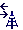
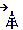

<gridster class="header-gridster" [options]="headerOptions" *ngIf="ready">
    <gridster-item class="my-header-gridster-item" [ngClass]="{'last': item.x === 3}" [item]="item"
        *ngFor="let item of dashboardHeader">
        {{ item.label }}
    </gridster-item>
</gridster>

<gridster class="my-gridster" [options]="options" *ngIf="ready">
    <gridster-item class="my-gridster-item" [item]="item" *ngFor="let item of dashboard">

        <div class="button-holder" (click)="itemSelected(item)">
            <div class="text">
                <div classs="label">
                    {{ item.label }}
                </div>
                <div class="frequency" *ngIf="item.type !== AGENT_TYPE_TELEPHONE && item.item.frecuencia !==0">
                    {{ item.item.frecuencia }} {{ 'MHz' }}
                </div>
            </div>
            <div class="icon">
                
                
                
                
                
            </div>
        </div>

        <button mat-icon-button mat-raised-button class="drag-btn drag-handler" *ngIf="!visualizationMode">
            <mat-icon>open_with</mat-icon>
        </button>
    </gridster-item>
</gridster>